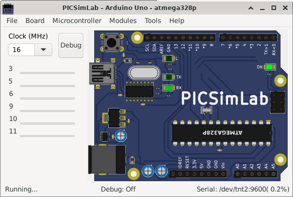

4.7 Arduino Uno
It emulates the Arduino Uno development board that uses one ATMEGA328P microcontroller of simavr.

The code examples can be loaded in PICSimLab menu Help->Examples.
The source code of board Arduino Uno examples using the Arduino IDE with avr-gcc are in the link: board_Arduino_Uno.
More information about the Arduino in www.arduino.cc